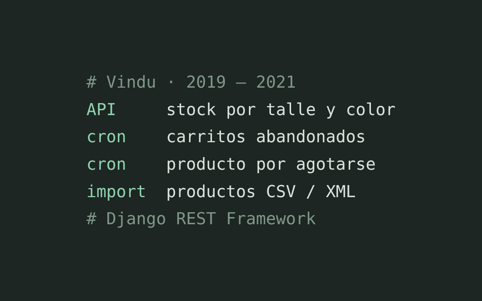

¡Hola! Soy desarrollador full-stack en Santa Fe, Argentina.
Hernán Gastón
Desarrollador full-stack · Node.js · Python / Django · Angular

Perfil
Hernán es Técnico Universitario en Programación (UTN) y trabaja en backend con Node.js, Express, Python y Django, y en frontend con Angular y JavaScript. Desde 2014 administra una empresa agrícola, y de ahí salió su proyecto más conocido: Margen Ganadero, un simulador que les dice a los productores cuánto pueden pagar por la hacienda sin perder plata. Busca un rol full-stack en un equipo que construya productos para usuarios reales.
Bio
- 2014Empieza a administrar Agroequity S.A., productora de soja, trigo y maíz para exportación
- 2019Desarrollador web freelance en Vindu, plataforma de moda: API REST con Django REST Framework, automatizaciones e integraciones (hasta 2021)
- 2024Se recibe de Técnico Universitario en Programación en la UTN
- 2026Publica Margen Ganadero y trabaja como desarrollador web freelance
- 2026Mentoría intensiva en ID for Ideas: APIs REST con Spring Boot y Express
Stack
- JavaScript
- TypeScript
- Node.js
- Express
- Python
- Django
- Django REST Framework
- Angular
- React
- PostgreSQL
- MySQL
- Docker
- Vercel
- Git
Proyectos

Margen Ganadero
Simulador de rentabilidad para la compra de hacienda de invernada

Gestión de mantenimiento
API REST y frontend Angular para órdenes de trabajo de mantenimiento

Vindu
API de stock, automatizaciones y restyling para una plataforma de moda (freelance)

Sitio para una psicóloga
Sitio profesional con formulario de consulta, para una clienta en Uruguay